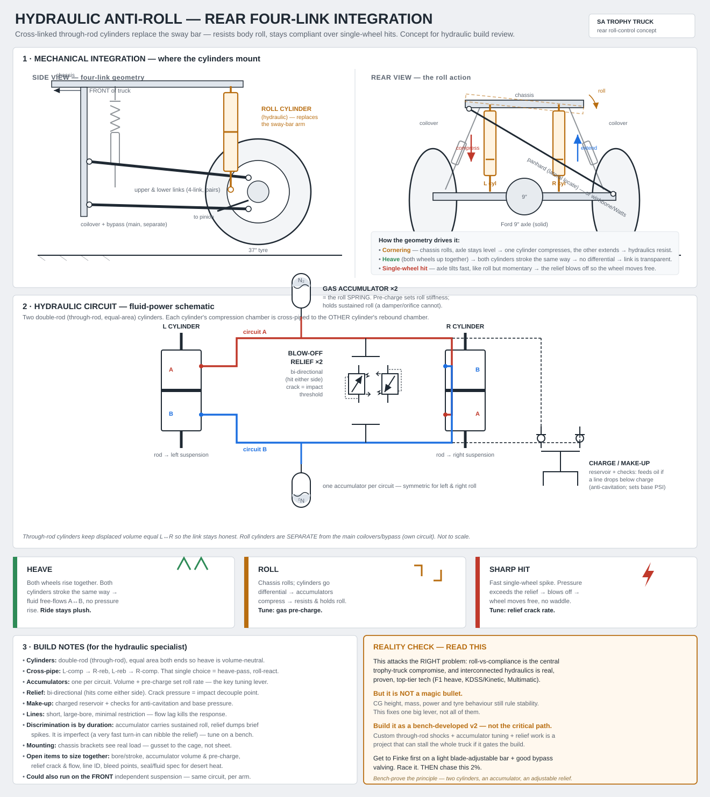
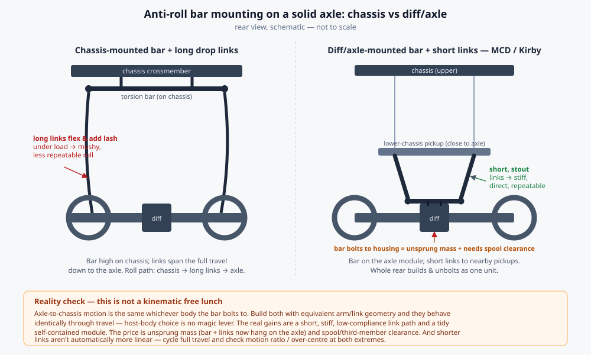

Holding roll without the waddle
A first-principles teardown of bypass-shock internals, cross-linked hydraulic roll control, and the proven prior art — landing on the honest optimum for a long-travel desert truck: a bulletproof steel bar plus exactly one self-contained blow-off shock, packaged the MCD/Kirby way over the diff.
The problem: why a trophy truck rolls, and why the cure has a catch
Soft, long-travel springs are non-negotiable for jumps and rough terrain — but on a tall, heavy, powerful chassis they give very little roll stiffness. The truck leans hard in corners, which tucks tyres, slows transitions and eats the usable travel you fought for.
A sway bar adds roll stiffness without adding ride stiffness — exactly what you want. But it couples the wheels: a single-wheel hit gets transmitted across the axle (the "waddle"), the partner wheel is unloaded on impact, and the bar fights the dampers in cross-grain terrain. Desert teams call them evil and run the smallest one they can get away with.
So the goal is precise: hold roll in corners (a sustained, low-rate, differential input) while staying compliant over sharp single-wheel hits (a transient, high-rate input). Two physics facts govern everything that follows: roll must be held by a spring (force that builds with displacement), and impact compliance needs the device to decouple on a transient spike. The discriminator between "roll" and "a hit" is duration, not which wheel moved.
How a bypass shock actually works
The toolbox first. A bypass shock is a damper with two tuning axes — velocity and position.
- Main piston carries a shim stack (spring-steel discs over ports) plus a permanent bleed. It shapes force-vs-velocity: light and bled at low shaft speed, then the shims "blow off" at high speed so a sharp hit doesn't spike force to infinity. That's velocity sensitivity.
- Bypass tubes (two to six, split compression/rebound) route oil around the piston, each with its own tunable poppet. Near ride height oil escapes through the open ports → soft; past the port the bypass seals and oil is forced through the shim stack → firm. That's position sensitivity.
The load-bearing fact: flow through an orifice or poppet drops pressure roughly with flow squared. Shaft velocity sets the flow, so damping is low at low velocity, high at high velocity, and essentially zero at zero velocity. Hold that thought — it decides the whole argument.
The cross-link concept: what's genuinely sound, and the fork
Plumb the left and right shocks together so fluid only transfers on differential motion. In heave (both wheels compress together) there's no net flow → the link is transparent and the ride stays soft. In roll or articulation (one up, one down) fluid moves through the link → resistance. That instinct is correct, and it's exactly what the frontier systems exploit.
But there are two forks. Truth A: damping resists velocity; only a spring resists displacement. Sustained corner roll is slow shaft motion → low flow → low force. A pure poppet/orifice cross-link gives weak resistance to slow roll and strong resistance to fast hits — the exact inverse of the goal — and makes zero force at zero velocity, so it cannot hold a roll attitude. Truth B: velocity can't tell a sharp turn-in from a sharp bump; both are fast differential inputs. The real difference is duration (roll lasts hundreds of milliseconds to seconds, a hit a few milliseconds), which calls for a frequency filter — a gas accumulator — not more poppets.
The reframed cross-link that actually works
Fix the concept by adding the two elements poppets can't replace:
- Through-rod (double-ended) shocks. A single-rod shock displaces rod volume as it strokes, unbalancing the link; a through-rod keeps displaced volume equal side-to-side so the link stays honest. This alone is why real cross-linked systems use them.
- A gas accumulator in the roll circuit = the roll spring. Sustained differential displacement compresses it, producing a restoring pressure that both resists and holds roll. Pre-charge sets roll stiffness and can be shaped progressive.
- A tunable relief/blow-off across the link = the impact filter. A brief high-pressure spike from a sharp single-wheel hit cracks the relief → the wheel moves free; sustained roll pressure stays below it, carried by the accumulator. This is where bypass-poppet intuition belongs — as the relief, not the roll-holder.

Net behaviour: stiff to sustained roll (accumulator), compliant to sharp hits (relief), transparent to heave (cross-link), tunable by pre-charge and relief rate. The honest costs: through-rod shocks are mandatory, the small-master/big-slave plumbing is a packaging problem, hydraulic durability under sustained desert hammering is real, and every extra circuit is another failure point mid-stage and another thing to certify for road rego.
Prior art: this is proven, from F1 to LandCruisers
None of this is speculative — passive hydraulic interconnection has a long, successful lineage:
- Kolltek Cross Link (KCL) — the closest buyable off-road product; a passive hydraulic cross-link that replaces the sway bar, giving anti-roll, anti-dive and self-levelling by mechanical logic, no electronics. Worth contacting before building.
- Citroën Xantia Activa (1994) — first production active cross-stabiliser; limited lean to ~0.5° and held the moose-test record (85 km/h) for ~26 years. The honest lesson: the rest of the chassis couldn't keep pace — balance the truck, don't out-develop it.
- Toyota KDSS — passive hydraulic interconnect (invented by Kinetic Pty Ltd, WA): rigid bars on-road, decoupled off-road. The best "what does the hardware look like" reference.
- F1 FRIC (banned mid-2014) and Multimatic DSSV / TrueActive (which can delete sway bars, and runs on the Silverado ZR2 at the Mint 400 and King of the Hammers) — proof that "no sway bar via shock control" is both a performance-bannable advantage and desert-real.
Several patents describe the exact approach — left/right shocks with separate compression/rebound valves, through-rod rods, a reservoir, running alongside a lighter sway bar: "like two independent shocks and a disengaged sway bar." It's literally cross-linking bypass shocks. For a one-off home build that's IP awareness, not a commercial blocker — but it exists.
The minimum system: steel bar + one blow-off shock
Effectiveness and robustness sit at opposite ends. For a truck that must finish, keep a bulletproof mechanical core and add the minimum hydraulic content to fix the bar's one real flaw.
Keep a steel anti-roll bar as the roll spring, and replace one of its two drop links with a single self-contained blow-off (bypass/relief) shock. Through the cornering-load range that shock is effectively rigid, so the bar works normally and holds roll. On a sharp single-wheel spike the relief cracks, the link gives, and the bar momentarily decouples — no waddle, partner wheel not unloaded.
One link is enough because a torsion bar is a single load path: both drop links carry equal and opposite force, so one blow-off link gates the whole bar — a hit from either wheel cracks it. The minimum parts count: one bar, two arms, two bearing mounts, one solid chromoly link, one blow-off shock. The only hydraulic part is a single self-contained shock — no lines, no external accumulator, no reservoir, nothing to plumb or bleed. Two clean tuning knobs: blade angle (roll rate) and shock relief (impact threshold).
Architecture: the diff-mounted (MCD/Kirby) packaging
Clamp the torsion section to the axle housing over the third member, in bearings so symmetric bump doesn't twist it, with short stout links to chassis pickups and the bar arcing over the diff.

The real benefits, in honest order: (1) a self-contained axle module — the rear end builds, sets up and unbolts as one assembly; (2) a direct, low-compliance roll path — short stout links instead of long slender drop links that flex and add lash; (3) compact, low, central packaging.
Walk-back worth stating: this is not for "geometry consistency." The bar reacts axle-to-chassis roll either way, and that relative motion is frame-independent — an equivalent chassis-mounted bar behaves identically. Worse, short links push motion-ratio variation up and raise over-centre risk. The wins are practical and structural, not kinematic.
The costs of diff-mounting: unsprung mass (so run the smallest bar that controls lean), a hostile impact/debris/pinion-heat zone, and spool/third-member clearance (a spool housing is fatter than an open diff — sort it early). The blow-off shock itself: compact and self-contained, effectively rigid through full cornering load, with a tunable relief, a short stroke (~15–25 mm) and internal end-stops as a mechanical backstop.
Failure modes, tuning, and the staged build path
It degrades gracefully. Relief clogs or fails closed → the bar is fully active, harsh but safe. Shock loses oil → the rod is free over its short stroke then bottoms on its internal stops → the bar works with slight lash, still drivable. The big win is that there are no external lines, fittings, accumulators or reservoirs to leak — the single fact that beats every plumbed system for a truck that has to finish.
Tune the two knobs on a timed loop: roll rate via the blade (start with the smallest rate that stops lean and tyre-tuck, rear-biased to rotate); impact threshold via the relief (high enough that even a hard turn-in stays below it, low enough that genuine single-wheel hits crack it). Too low feels vague in corners; too high feels harsh and waddly.
Key takeaways
- Damping ≠ spring. Only a spring (steel bar or gas accumulator) can hold a roll attitude; a poppet-only cross-link inverts the goal.
- Duration, not which wheel, separates roll from a hit — so an accumulator swallows transients and the poppet/relief is the impact filter, never the roll-holder.
- No roll device removes steady-state load transfer (that's set by CG height, track and lateral G). The prize is the transient/impact domain.
- For a truck that must finish, keep a bulletproof mechanical core and add the minimum hydraulic content — one self-contained blow-off shock, nothing to leak.
- Build in order: bar alone → add the blow-off link → (maybe) the full cross-link. The diff-mounted layout wins on module and packaging, not kinematics.
Honesty notes. The diff-mounted clamp detail is read from video, not verified from stills. The full cross-link is bench-test-pending, not built. The blow-off shock is rate/force-sensitive, not psychic — a very hard berm can nibble it. This minimum system trades the theoretical maximum of roll-vs-compliance separation for robustness, on purpose.